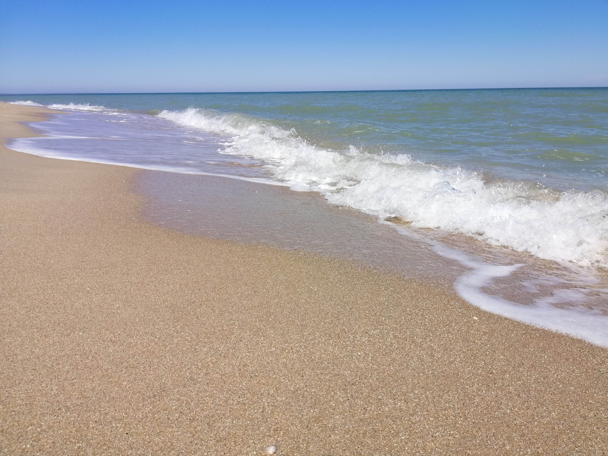
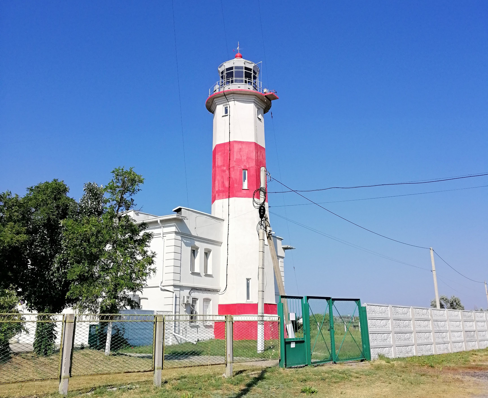
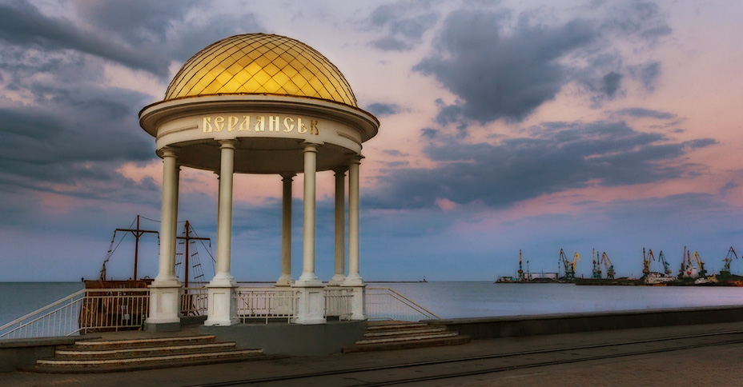

Цікаві місця
- Бердянська коса
Це пісчана коса, яка заглиблюється в море майже на 20 кілометрів. На Бердянській косі розташовано багато оздоровчих закладів, санаторіїв і баз відпочинку для дітей та дорослих. На Середній косі вас зустріне розвинена туристична інфраструктура, а Дальня коса підійде для тих, хто хоче тихого відпочинку подалі від міської метушні.
- Бердянський маяк
Нижній Бердянський маяк розташований на оголовку коси. Це одін із найстаріших маяків України, який був побудований у 1838 році, щоб вказувати шлях до Бердянського порту. Цей маяк працює і сьогодні.
- Набережна
Набережна Бердянська – його серце. Вона тягнеться уздовж берега моря і є улюбленим місцем для прогулянок містян і туристів. На Набережній можна відвідати різноманітні кафе, які порадують смачними стравами, або розважитись разом з дітьми на атракціонах. Також від пірсу на Набережній відправляються катери, на яких можна покататись по заливу і помилуватись видом на місто з моря. А любителів гострих відчуттів завжди чекають швидкісні моторні човни.
- Оглядовий майданчік на горі
З цього місця ви можете побачити все місто та спостерігати мальовничі заходи сонця над морем. А іноді навіть побачити, як палає "рускій ваєнний карабль"))

- Колесо огляду
"Міраж" – це найбільше в Україні колесо огляду, яке підніме вас на 50-метрову висоту. З нього можна побачити порт, залив, косу і панораму міста.